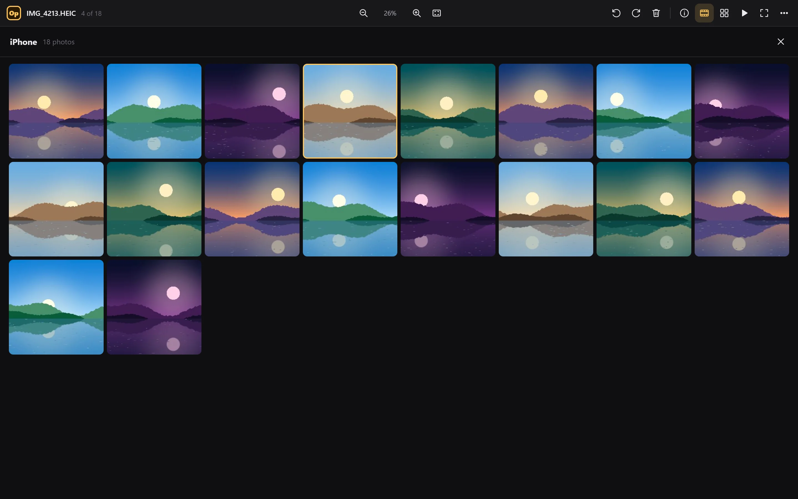
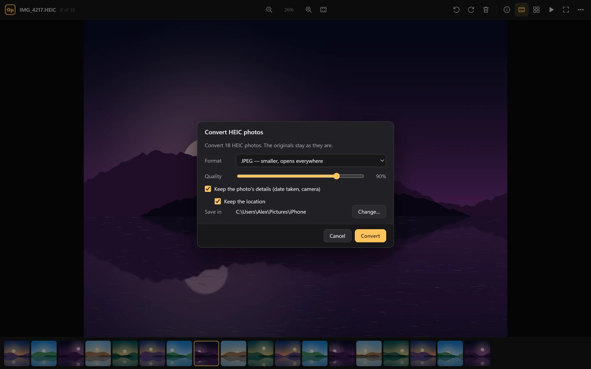

Open iPhone HEIC photos on Windows, free
A fast photo viewer that opens iPhone HEIC photos with no extra codecs, steps through your folders and turns HEIC into JPEG when you need to share.

Every photo, one key press away
iPhone photos, no codecs
HEIC and HEIF open as they are, in their full Display P3 colour. No Microsoft extensions to buy or install.
Instant
The preview inside a HEIC shows at once, the full photo a moment later, and the next photos are already decoded.
Your whole folder
Arrow keys, swipes or the wheel, a filmstrip and a grid, sorted by name, date or size. New photos appear by themselves.
Look closer
Zoom with the wheel, a pinch or a double-click, drag around, fit to the window. Full screen and slideshows.
The details
When and where it was taken, the camera and lens, shutter speed, aperture and ISO, with a link to the map.
Convert and tidy up
Save copies as JPEG, PNG or WebP, convert a folder at once, rotate JPEGs losslessly, delete to the Recycle Bin.


Opal: FAQ
Can Opal open HEIC files without the HEIF extensions?
Yes. Opal brings its own HEIC decoder (libheif), so iPhone photos open without Microsoft’s HEIF or HEVC extensions.
Can Opal convert HEIC to JPG?
Yes. Save a copy of one photo, or convert every HEIC photo in a folder to JPEG at once. The copies keep the date taken and camera details, and the location if you choose.
Which formats does Opal open?
HEIC and HEIF, AVIF, JPEG, PNG, GIF and WebP (animations play), BMP and ICO.
Get Opal free
Opal is part of Crystal Suite: install the launcher, then add Opal with one click.